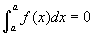
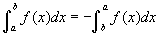
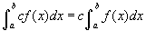
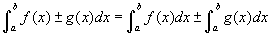
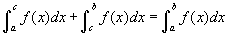
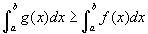
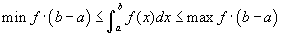
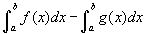
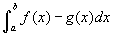

This device cannot display Java animations. The above is a substitute static image
1. Zero rule and Reverse Limits
The applet shows a graph of an exponential function, with the area under the curve from a to b in green. Drag the a or b slider to make a = b. What is the area? This illustrates the zero rule:

Now drag the sliders so that
b <
a. What happens to the area? As you can see,
reversing the limits of a definite integral reverses the sign, or:

.
2. Constant multiple rule
Select the second example from the drop down menu. This shows a line and the area under the curve from a to b
in green. Also shown is a second function, in red, which is a constant multiple c of the first function
(i.e., h(x) = cf (x)).
Initially, c = 2. What do you notice about the areas (values of the areas are shown in the top left corner of the graph)? Drag the c slider, or type different values for c into the c input box. What do you notice? Try making c be -1. This illustrates the constant multiple rule:

In other words, if the integrand in a definite integral is multiplied by a constant, you can "pull the constant outside" the integral.
3. Addition rule
Select the third example. The green curve is the line f (x) = x, the blue curve is the exponential function g(x) = ex
and the red function is their sum, h(x) = f (x) + g(x). What do you notice about the areas? Move the a and b sliders and see if this relationship still holds. You should notice that the area under the red curve is the sum of the areas under the blue and green curves. This makes sense, since the Riemann sums are just made up of tall, thin rectangles and the height of the red rectangles is just the sum of the heights of the green and blue rectangles.
So the Addition Rule states:

This says that the integral of a sum of two functions is the sum of the integrals of each function.
It shows plus/minus, since this rule works for the difference of two functions
(try it by editing the definition for
h(
x) to be
f (
x) -
g(
x)).
4. Internal addition
Select the fourth example. This shows one function,f (x) = ex. The green area is from a to c and the blue area is from c to b. The values of these two areas, plus the value of the area from a to b are displayed in the top left corner. What do you notice about the relationship between these three areas? Try dragging the c slider to see if this relationship holds while c is between a and b. Now try dragging c past either a or b; does the relationship still hold? This is called internal addition:

In other words, you can split a definite integral up into two integrals with the same integrand but different limits, as long as the pattern shown in the rule holds.
5. Domination
Select the fifth example. The green curve is an exponential, f (x) = ½ ex and the blue curve is also an exponential, g(x) = ex. On the interval from a to b, g(x) is always greater than f (x). This means that the rectangles in the Riemann sum for g(x) will always be taller than those for f (x). Hence the area under g will be greater than the area under f, as you can see is true in this case.
If g(x) ≥ f (x) on the closed interval [a,b], then

As a special case, set
f (
x) = 0 by typing in the definition box for
f and pressing Enter. This says that if
g is positive everywhere on some interval, then the definite integral is also positive on that interval.
6. Min - Max Inequality
Select the sixth example. The function is f (x) = ex, shown in green. The height of the smaller, greenish-gray rectangle is the minimum value of f on the interval [a,b], while the height of the dark gray rectangle is the maximum value of f on the same interval. Clearly, the area under f is somewhere between the area of these two rectangles. Formally, we say that

where min
f is the minimum value of
f on [
a,
b] and max
f is the maximum value of
f on this interval. (
b -
a) is the width of the interval (and of the rectangles shown).
7. Area between curves
Select the seventh example. This shows the area between two linear functions, with f (x) as the upper function in green and g(x) as the lower function in blue. You can think about the area between two curves in two different ways. You can find the area of the upper function and subtract from this the area of the lower function, or

You can also think about a Riemann sum where the tops of the rectangles are at the upper function and the bottom of the rectangles are at the lower function. Then the height of the rectangles is
f (
x) -
g(
x), so the area is

Try editing the g(x) definition by putting a minus sign in front (i.e., make it - 0.5x) and pressing Enter. Does it make sense that the area between the curves got larger? Delete the minus you just added (i.e., make
g(x) = 0.5x) and make f (x) = - x (i.e., put a minus sign in front of the definition for f and press Enter). What happens to the area? Why is it negative when the "upper" function is actually below the "lower" function?
8. Crossing curves
Select the eight example. This shows a more complicated situation, where the two functions cross. The area to the left of the intersection point will be counted negatively, because g(x) is greater in this region, while the area to the right of the intersection point will be counted positively, because f (x) is larger.
Explore
You can experiment with your own examples by selecting the property from the choice box; this will configure the input boxes, sliders, and graph appropriately. You can then enter function definitions, values for a, b, and c (as appropriate to the example) and zoom/pan the graph.
Other 'Definite Integral' topics
(C) 2011 Copyright Math Open Reference.
All rights reserved